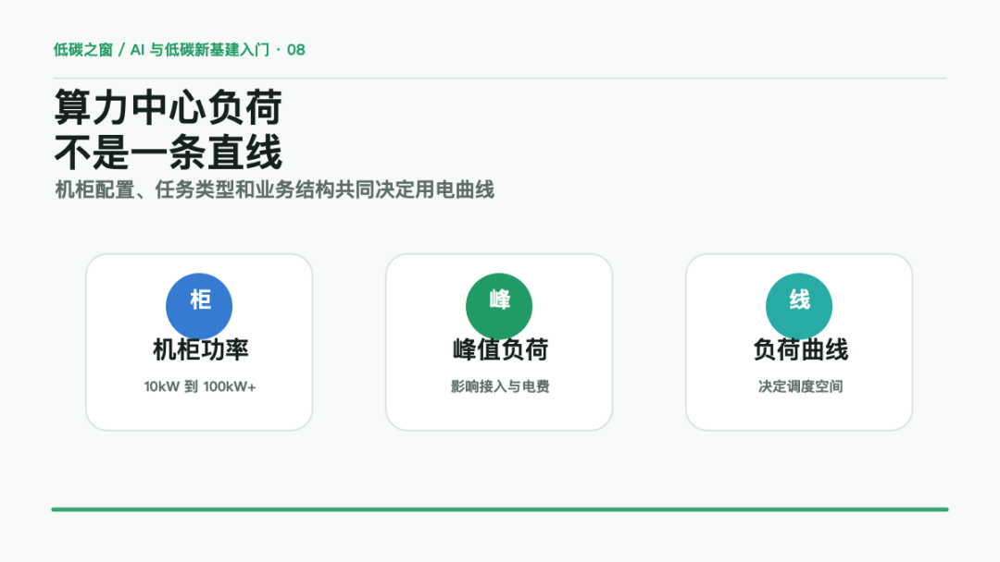
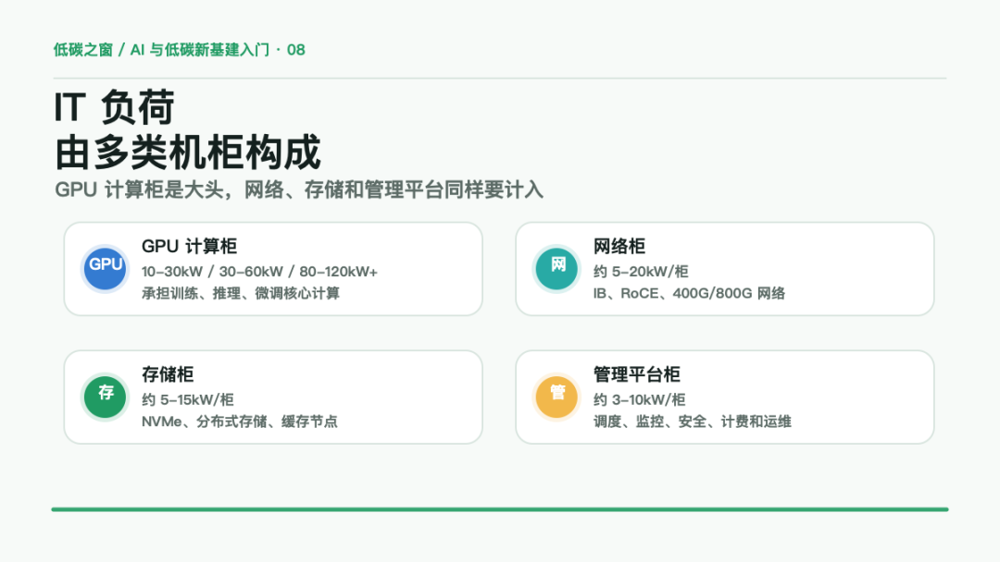
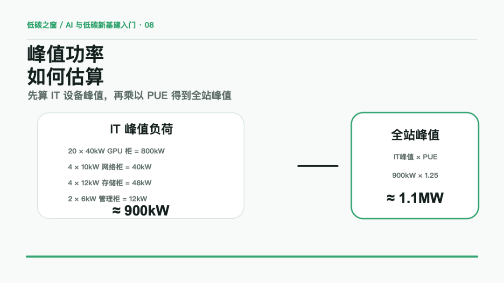
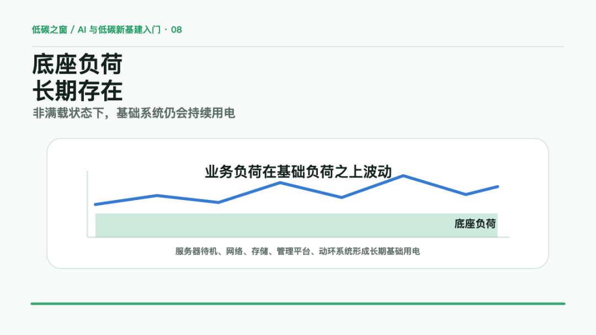
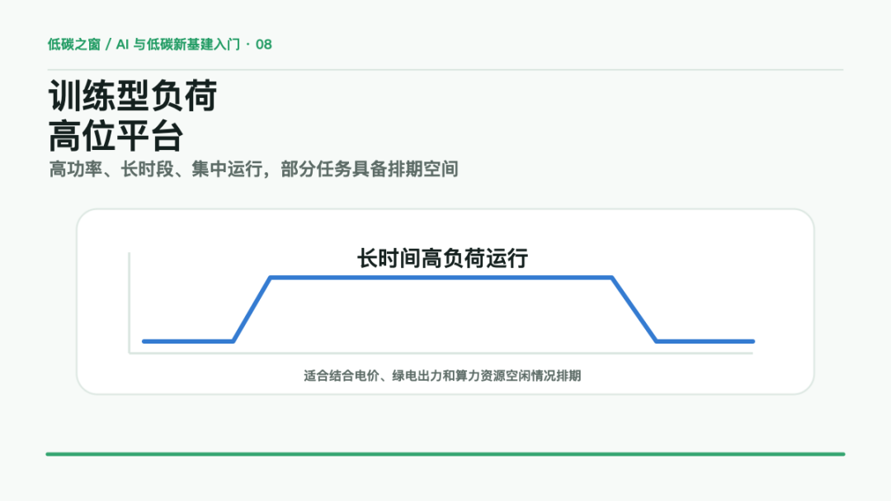
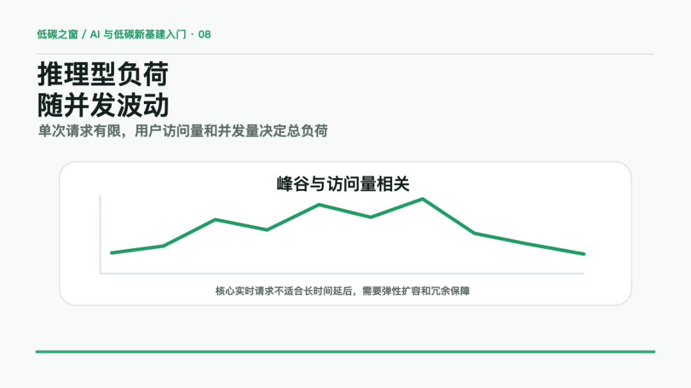
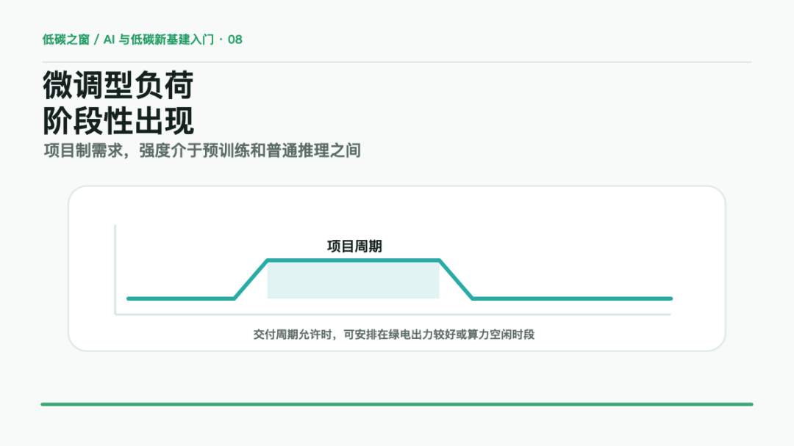
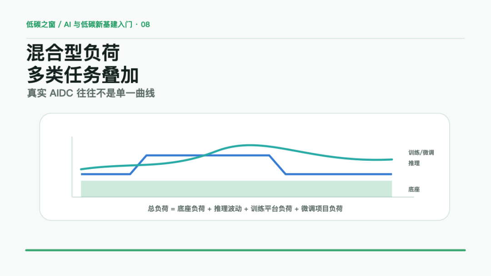
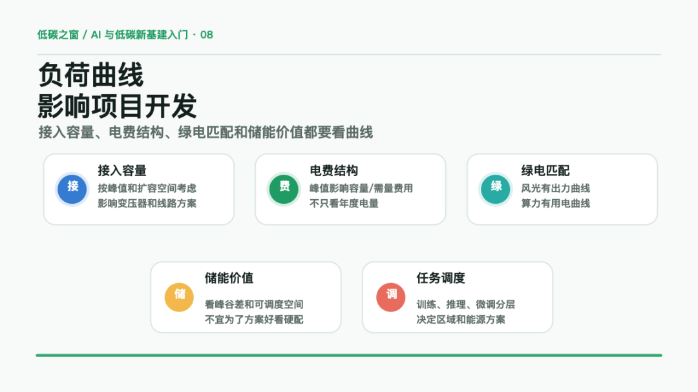
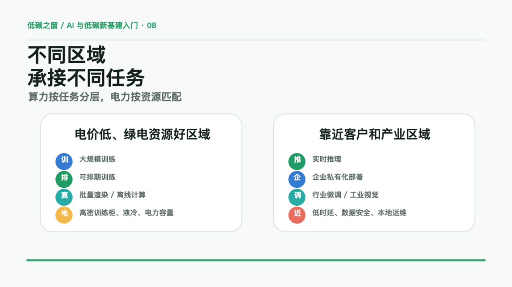

训练、推理和微调，是当前 AI 算力中心最常见的三类任务。
这三类任务都消耗算力，也都会形成用电负荷，但它们的负荷特征并不相同。
训练任务通常表现为高功率、长时间、集中运行。
推理任务通常与用户访问量、并发量和响应时延相关。
微调任务更多体现为阶段性、项目制的算力需求。
因此，看一座算力中心，不能只看年度耗电量，也不能只看规划了多少 P 算力。
更关键的是要看：
IT 设备怎么配置，单柜功率是多少，峰值负荷多大，负荷曲线如何变化。
这篇文章先从机柜功率讲起，再分析算力中心几类典型负荷曲线。
一、先看机柜：IT 负荷由哪些设备组成
AIDC 的 IT 负荷，通常不是由单一类型机柜构成，而是由计算、网络、存储、管理平台等多类设备共同形成。
其中，GPU 计算柜是主要负荷来源，但不是唯一负荷来源。
第一类，GPU 计算柜。
GPU 计算柜承担训练、推理、微调等核心计算任务，是 AIDC 中功率密度最高的一类机柜。
按当前常见项目口径，可以粗略分为几个档位：
•普通推理或轻量训练柜：约 10-30kW/柜；
•高密 GPU 训练柜：约 30-60kW/柜；
•新一代液冷整柜系统：可达到 80-120kW/柜以上。
以 8 卡 GPU 服务器为例，部分高端设备单机最大功率已经达到 10kW 级别。
如果一个机柜部署 3 台这类服务器，单柜 IT 功率就可能接近 30kW。
如果采用更高密度整柜方案，则需要同步考虑供配电、母线、冷却、承重和运维空间等条件。
第二类，网络柜。
训练集群和大规模推理集群需要高速网络支撑。
网络柜中可能包括 IB 交换机、RoCE 交换机、400G/800G 以太网设备、管理交换机等。
这类机柜功率通常低于 GPU 计算柜，但对集群效率影响很大。
项目测算时，可以粗略按 5-20kW/柜 作为入门区间。
如果网络设计不足，GPU 虽然上架了，实际训练效率也可能受到明显影响。
第三类，存储柜。
AI 训练、微调、检索增强、企业知识库和多模态应用，都需要存储系统支撑。
存储柜可能包括 NVMe 存储、分布式存储、对象存储、缓存节点等。
常见存储柜功率可以粗略按 5-15kW/柜 看，高性能 NVMe 存储或高吞吐存储系统可能更高。
存储负荷通常比训练负荷更平稳，但会长期存在。
第四类，管理和平台柜。
管理平台柜主要承担调度、登录、监控、安全、计费、运维管理等功能。
这类机柜功率一般低于计算柜和存储柜，可以粗略按 3-10kW/柜 理解。
它不是最大负荷来源，但属于算力中心长期运行的基础负荷之一。
因此，一座 AIDC 的 IT 负荷可以先按下面的逻辑理解：
IT负荷 = GPU计算柜负荷 + 网络柜负荷 + 存储柜负荷 + 管理平台柜负荷
需要注意的是，IT 负荷不包括冷却、UPS 损耗、配电损耗、照明等辅助系统。
冷却系统不计入 IT 负荷，但会显著影响机柜功率上限。
低密机柜通常可以采用风冷。
30-60kW 的高密 GPU 柜，往往需要强化风冷、背门换热、行级冷却或冷板液冷。
100kW 级别以上的整柜系统，基本要按液冷体系进行规划。

二、峰值功率如何估算：一个简化算例
假设一个小型 AIDC 模块配置如下：
•20 个高密 GPU 计算柜，每柜按 40kW；
•4 个网络柜，每柜按 10kW；
•4 个存储柜，每柜按 12kW；
•2 个管理平台柜，每柜按 6kW。
则 IT 峰值负荷可以粗略估算为：
GPU计算柜：20 × 40kW = 800kW 网络柜：4 × 10kW = 40kW 存储柜：4 × 12kW = 48kW 管理柜：2 × 6kW = 12kW IT峰值负荷 ≈ 900kW
如果 PUE 按 1.25 估算，则全站峰值功率约为：
全站峰值功率 ≈ IT峰值负荷 × PUE ≈ 900kW × 1.25 ≈ 1125kW ≈ 1.1MW
这里的 900kW 是 IT 设备峰值负荷。
这里的 1.1MW 是包含冷却、供配电损耗等辅助系统后的全站峰值功率。
这个例子说明，项目开发时不能只问“多少个机柜”。
同样是 30 个机柜，如果是普通 CPU 柜，总负荷可能只有几百 kW。
如果大部分是高密 GPU 柜，总负荷可能超过 1MW。
如果采用 100kW 级液冷整柜，几十个机柜就可能形成数 MW 级负荷。
因此，看 AIDC 的第一组关键参数应当是：
机柜数量、单柜功率、设备类型、冷却方式和扩容路径。

三、底座负荷：非满载状态下仍会持续存在
算力中心不是只有在满负荷训练时才耗电。
即使业务负荷不高，也会有一部分基础用电长期存在。
典型来源包括：
•服务器待机和基础运行；
•网络设备运行；
•存储系统运行；
•管理平台和监控系统运行；
•UPS、配电、安防、动环系统运行；
•部分常驻业务服务。
这部分可以理解为算力中心的底座负荷。
它通常低于满载训练负荷，也不像推理流量那样随用户访问明显波动，但会长期存在。
底座负荷越高，说明即使算力利用率不高，固定电力成本也不会明显下降。
这也是 AIDC 特别关注利用率的原因。
机房、供配电、冷却系统和算力设备已经投入后，如果业务利用率不足，仍然会产生持续成本。
所以看负荷曲线时，第一层要判断：
基础负荷是多少，业务负荷在基础负荷之上如何叠加。

四、训练型负荷：高功率、长时段、集中运行
训练任务的负荷曲线，典型特征是高功率、长时间、集中运行。
尤其是大模型预训练，通常需要大量 GPU 或 AI 加速卡协同工作，同时依赖高速网络和高吞吐存储。
任务启动后，集群往往需要保持较长时间稳定运行。
如果中断，可能涉及任务恢复、数据重载、检查点校验和训练效率损失。
因此，训练型负荷通常更接近一段高位平台负荷：
低负荷 → 启动训练 → 长时间高负荷运行 → 训练结束后下降
训练型负荷的主要特征包括：
•单次任务功率高；
•持续时间长；
•对供电稳定性要求高；
•对网络和存储吞吐要求高；
•可提前规划资源；
•部分任务具备排期和调度空间。
训练任务的关键不只是“耗电大”，还在于部分任务具有可计划性。
如果任务对启动时间不敏感，就可以结合电价、绿电出力、算力资源空闲情况进行排期。
这类负荷是算电协同中较有调度价值的一类负荷。

五、推理型负荷：与用户访问量和并发量相关
推理任务是模型面向用户或业务系统提供服务的过程。
用户提问、生成图片、调用智能客服、执行代码助手、进行工业视觉识别，后台都需要模型完成推理计算。
推理型负荷通常不表现为单次任务特别重，而是表现为请求频次高、并发波动大、实时性要求强。
其负荷曲线与用户行为和业务流量密切相关。
例如白天访问量较高，负荷可能上升；夜间访问量下降，负荷可能回落；促销活动、业务高峰、突发事件可能造成短时冲高。
推理型负荷的主要特征包括：
•单次请求负荷相对有限；
•请求次数和并发量决定总负荷；
•对响应时延要求高；
•峰谷波动明显；
•需要弹性扩容和冗余保障；
•核心实时请求不适合长时间延后。
与训练任务相比，推理任务的调度弹性较弱。
它可以通过缓存、限流、分级服务、弹性扩容、异步队列等方式优化，但实时请求不能简单迁移或延后。
例如智能客服、金融风控、工业质检、生产线视觉检测等场景，更关注稳定响应和低时延。
因此，推理型负荷在算电协同中重点要区分：
哪些请求必须实时响应，哪些请求可以排队处理，哪些业务可以分区域部署。

六、微调型负荷：阶段性、项目制、强度介于训练和推理之间
微调任务介于预训练和推理之间。
它通常不是持续高频发生，也不像大模型预训练那样形成长期重负荷。
企业或行业客户需要提升模型在特定场景下的表现时，才会形成一段集中的微调需求。
例如企业制度问答、项目资料理解、客服知识库、行业材料生成、业务流程问答等场景，都可能触发微调任务。
微调型负荷通常呈现为：
平时较低 → 项目启动后升高 → 持续一段时间 → 项目结束后回落
其主要特征包括：
•强度通常低于大规模预训练；
•高于普通单次推理；
•项目周期相对明确；
•可以提前准备数据和资源；
•对显存、框架和数据环境有要求；
•交付完成后负荷回落。
微调负荷比推理更可计划，比预训练更轻量。
在项目周期允许的情况下，可以安排在夜间、周末、绿电出力较好或算力资源空闲的时段。
但如果客户交付周期较紧，微调任务也可能转化为刚性负荷。
因此，微调负荷不仅是技术问题，也和商务交付周期、数据准备质量和客户 SLA 有关。

七、混合型负荷：真实 AIDC 通常是多类负荷叠加
真实 AIDC 通常不会只有一种任务。
同一座中心可能同时存在：
•一部分资源承接推理服务；
•一部分集群执行训练任务；
•一部分资源用于微调、测试和开发；
•一部分设备处于待机或备用状态；
•一部分机柜承担存储、网络和管理平台功能。
因此，总负荷可以简化理解为：
总负荷 = 底座负荷 + 推理波动 + 训练平台负荷 + 微调项目负荷
这也是为什么不能只用“多少 P 算力”判断用电特征。
同样是 2800P 算力中心，如果业务结构不同，负荷曲线可能完全不同。
以训练为主的中心，可能形成阶段性高位平台负荷。
以推理为主的中心，可能长期运行并出现明显日内峰谷。
以企业私有化和行业微调为主的中心，可能呈现项目制波动。
利用率不足的中心，可能底座负荷不低，但有效业务负荷不足。
因此，看算力中心负荷，要重点判断三个问题：
这座中心主要跑什么任务？
这些任务在什么时间运行？
哪些负荷是刚性的，哪些负荷具有调度空间？

八、为什么负荷曲线会影响项目开发
负荷曲线不仅是运行指标，也会直接影响项目前期开发和电力方案设计。
第一，接入容量要按峰值考虑。
变压器、线路、开关柜和接入系统方案，通常要考虑最大负荷和扩容空间，而不是只看平均负荷。
如果峰值较高，即使年平均利用率不高，也可能需要更大的接入容量和更高的供电等级。
第二，基本电费和需量管理受峰值影响。
工商业用户不仅承担电度电费，还可能涉及容量电费或需量电费。
如果负荷峰值频繁冲高，会影响整体电费结构。
第三，绿电匹配要看时间维度。
绿电采购不是只看年度总量。
风电、光伏有自身出力曲线，算力中心也有用电曲线。
两条曲线能否匹配，会影响绿电消纳质量和绿色用能方案的可信度。
第四，储能价值取决于峰谷差和可调度空间。
如果负荷长期平稳，储能主要价值可能有限。
如果存在明显峰谷，或者部分训练、微调任务可以转移，储能才更容易参与削峰填谷、需量管理和绿电消纳。
第五，算力任务可以分层部署。
实时推理更适合靠近客户和应用场景。
大规模训练可以布局在电价和绿电条件更好的区域。
微调任务可以结合交付周期进行灵活安排。
因此，负荷曲线会直接影响接入容量、冷却系统、绿电交易、储能配置和算力调度策略。

九、不同区域的算力中心，运算逻辑不一样
不同区域的算力中心，不应采用完全相同的业务定位。
区域资源禀赋、客户密度、电价水平、绿电条件、网络时延和产业结构，都会影响算力中心的任务类型。
电价较低、电力资源相对充足、绿电资源条件较好的区域，更适合承接：
•大规模训练；
•可排期训练；
•批量渲染；
•离线计算；
•对网络时延不敏感的任务。
这类任务通常负荷较重，但时间安排上存在一定空间。
只要网络、数据传输、安全合规和交付周期满足要求，相关任务可以向电力成本和绿电条件更优的区域调度。
这类算力中心更关注：
•大规模 GPU 集群；
•高密训练柜；
•电力接入容量；
•低电价和绿电比例；
•液冷系统；
•算力调度和任务排期能力。
客户和产业场景密集的区域，更适合承接：
•实时推理；
•企业私有化部署；
•行业模型微调；
•工业视觉；
•企业知识库；
•智能客服；
•研发设计辅助。
这类任务不一定形成最大负荷，但对网络时延、数据安全、本地运维、交付响应和行业服务能力更敏感。
因此，产业密集区域的数据中心，不一定要和低电价区域竞争训练成本。
它更适合提供贴近客户的推理、微调和企业级算力服务。
更合理的算力网络可能是：
低电价、绿电资源较好区域：承接训练和离线计算 靠近客户和产业区域：承接推理、微调和本地化服务
这也是算电协同中的关键逻辑：
算力按任务分层，电力按资源匹配，项目按客户需求和成本结构倒推。

十、算电协同真正要看什么
算电协同不是简单给算力中心配电。
它要判断的是：
算力任务能否与电力资源形成匹配。
需要重点关注的问题包括：
•训练任务能否安排在绿电更充足或电价更低的时段；
•推理任务中哪些必须靠近客户部署；
•微调任务能否根据交付周期灵活安排；
•底座负荷如何通过提高利用率摊薄成本；
•峰值负荷能否通过储能、弹性扩容、限流和调度降低；
•绿电交易、绿证、储能、需求响应和虚拟电厂是否有实际应用空间。
如果负荷没有调节空间，电力侧只能被动保障。
如果负荷具有调节空间，算力中心就不只是高载能用户，也可能成为可参与电力调节的新型负荷资源。
这也是算电协同区别于传统数据中心供电的核心。
十一、小结
今天这篇，我们从机柜功率和负荷曲线两个维度，重新看算力中心的用电特征。
机柜层面：
AIDC 的 IT 负荷主要由 GPU 计算柜、网络柜、存储柜和管理平台柜构成。
不同机柜功率差异很大，普通机柜可能是几 kW，高密 GPU 柜可能达到几十 kW，液冷整柜系统可能超过 100kW。
负荷层面：
底座负荷长期存在，训练型负荷高功率、长时段，推理型负荷与并发和时延相关，微调型负荷具有阶段性和项目制特征。
项目层面：
机柜功率决定接入容量和冷却方案，负荷曲线决定绿电匹配、储能价值、需量管理和算力调度空间。
如果只记一句话，可以记这句：
算力中心的用电，不是一条简单直线，而是由机柜配置、任务类型和业务结构共同叠加出来的负荷曲线。
看懂这条曲线，才知道一座算力中心到底适合怎么接电、怎么买绿电、要不要配储能、哪些任务能调度、哪些任务必须实时保障。


 **
**